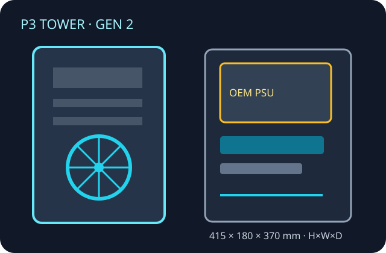

[ TOWER WORKSTATION // 2025 GENERATION ]
Lenovo ThinkStation P3 Tower Gen 2
A vendor-specific workstation tower; use the exact machine-type/model and PSU option when checking assemblies. This schematic is not to scale.

Specifications & fit
| Model / revision | ThinkStation P3 Tower Gen 2 (2025 platform); configuration varies by machine type and regional SKU. |
|---|---|
| Board form factor | Lenovo proprietary system board and mounting; do not infer standard ATX interchangeability from tower dimensions. |
| Dimensions | 415 × 180 × 370 mm (H × W × D), manufacturer published. |
| PSU | OEM 500 W, 750 W or 1100 W options; 92% efficiency stated. PSU selection limits supported GPU/storage combinations. |
| GPU / cooler / radiator fit | Use Lenovo's validated PCIe graphics configurations for the exact PSU and machine type. No universal retail-card length or third-party radiator envelope is specified; retain factory CPU thermal module and clearance shroud. |
| Drive bays | Configuration-dependent 3.5-inch SATA and M.2 NVMe positions; full populated SATA layouts can restrict access to board M.2 connectors. Check exact assembly matrix. |
| Airflow | OEM fan, duct and CPU/GPU thermal configuration; maintain unobstructed chassis vents and original baffles. No standard fan/radiator mounting promise. |
| Serviceability / compatibility | Service using the P3 Tower Gen 2 hardware maintenance manual; match board, PSU harness, fan, drive cage and GPU power connector to machine type. Not a general-purpose ATX donor case. |
Manufacturer sources
- Lenovo — ThinkStation P3 Tower Gen 2 datasheetDimensions, power options and platform configuration.
- Lenovo Support — P3 Tower Gen 2 guides and user documentationRevision-specific service and user documentation.